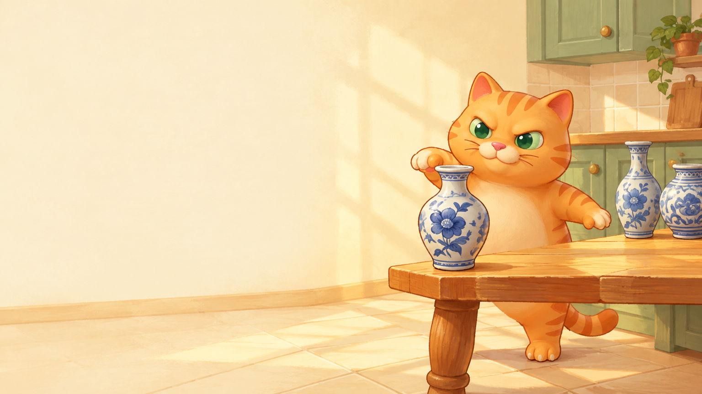
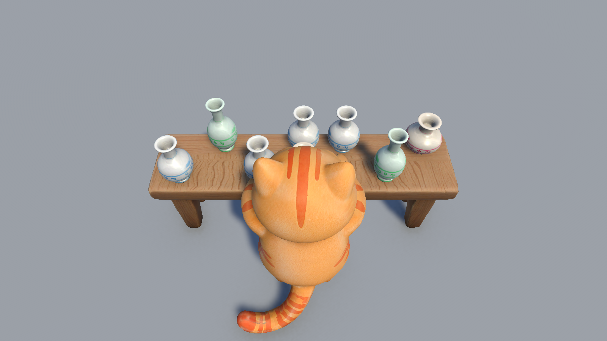
1차 에셋의 구조를 게임 규칙으로
카메라·조작·점수·성장 설계
3–8쪽
// 같은 Swipe에서 한 번만 힘 전달 if (other.SwipeId == SwipeId) return; other.ReceiveChain(SwipeId, ChainStep + 1, dir * speed * ChainTransferRate);
AI 코딩 도구로 4일간 스크립트 28개
프롬프트·오류 해결·주요 코드
9–21쪽
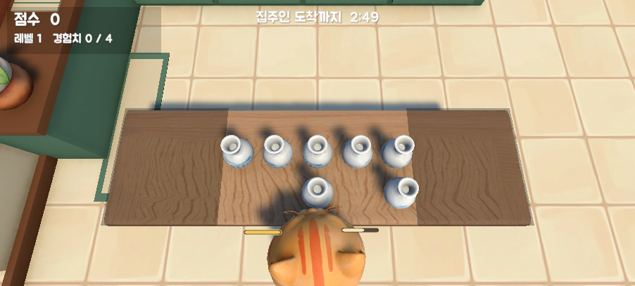
시작부터 결과까지 이어지는 1스테이지
UI·연출·사운드, 빌드와 영상
22–26쪽
| 게임명 | Purrcelain Panic (고양이 난장판) |
| 장르 | 3D 물리 액션 로그라이트 · PC |
| 엔진 | Unity 6 (6000.6, URP) |
| 플레이 | 한 판 3분 (180초) |
| 사용 에셋 | 1차 고양이·식탁·도자기 3종·파편 9조각 |
집주인이 오기 전 물건을 깨고, 카드 3장 중 1장을 골라 강화하는 로그라이트
장작을 넣어 빛의 범위를 유지하고 그림자 괴물을 막는 디펜스
에셋과 행동의 연결, 짧은 타격감, 파편 활용도에서 고양이 쪽이 적합
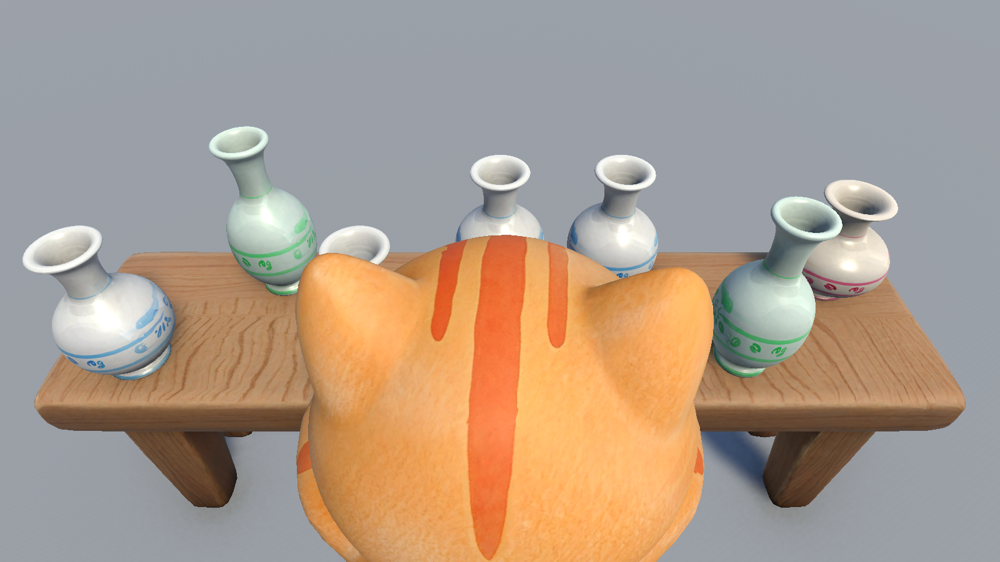
45° · 머리 뒤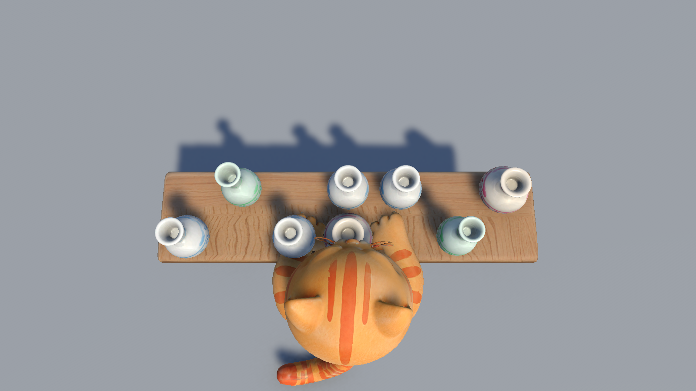
78° · 머리 바로 위| 입력 | 동작 |
|---|---|
| A / D, ← / → | 고양이 좌우 이동 (충전 중 속도 ×0.6) |
| 마우스 왼쪽 / 오른쪽 | 왼손 / 오른손 · 누르면 충전, 떼면 휘두르기 |
| 짧게 / 길게 | 빠르고 약하게 / 최대 1초 충전해 강하게 |
| 카드 클릭 · 1/2/3 | 레벨업 카드 선택 |
| ESC | 일시정지 |
| 구간 | 식탁 | 생성 간격 | 새로 등장 |
|---|---|---|---|
| 1 · 0–60초 | 가운데 5열 | 2.5초 | 일반 도자기 |
| 2 · 60–120초 | 7열 | 1.8초 | Fragile Batch, 앞뒤 2개 배치 |
| 3 · 120–180초 | 11열 전체 | 1.2초 | Collector’s China, 군집 배치 |
목표 집주인이 돌아오는 180초 안에 도자기를 깨서 최대한 높은 점수를 얻는다.
획득 파손 등급에 따른 점수 · 콤보 배율 · 경험치 → 레벨업 카드
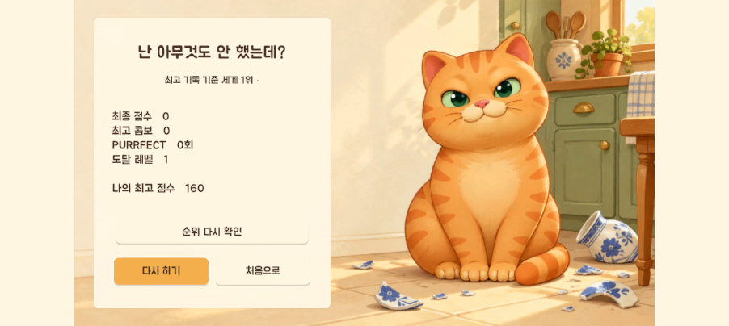
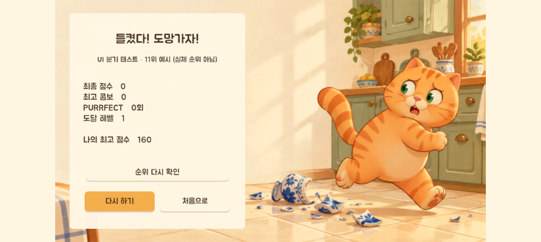
시간이 끝나면 “철컥… 집주인이 돌아왔다!” 연출 뒤 온라인 랭킹(Unity Gaming Services)에 점수를 올리고 순위로 결과를 나눈다.
| 등급 | 판정 점수 | 점수 | 경험치 | 연출 |
|---|---|---|---|---|
| CRACK | 0.35 미만 | 100 | 1 | 작은 팝업 |
| SMASH | 0.35 ~ 0.70 | 160 | 2 | 흔들림 0.04 m, 불꽃 6 |
| PURRFECT | 0.70 이상 | 250 | 3 | 흔들림 0.08 m, 불꽃 12, 고리 |
Fragile은 0.60부터 PURRFECT · Collector는 점수 ×2, 경험치 +2
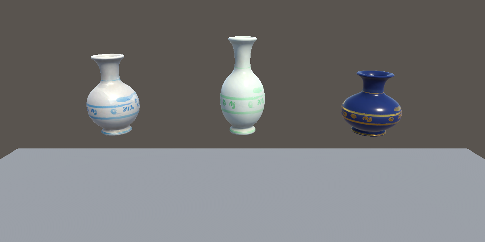
| 분류 | 카드 | 레벨당 효과 |
|---|---|---|
| 직접 조작 | 강철 앞발 Iron Paw | 휘두르기 힘 +20% |
| 재빠른 앞발 Quick Swipe | 손별 재사용 대기시간 −12% | |
| 순간 집중 Quick Charge | 최대 충전 시간 −12% (Lv 5: 1초 → 0.4초) | |
| 넓은 휘두르기 Wide Arc | 휘두르기 판정 반경 +20% | |
| 번갈아 치기 Alternating Paws | 반대 손으로 이어서 맞히면 다음 휘두르기 힘 +15% | |
| 발톱 바람 Claw Gust | 손끝 충격파 사거리 +0.08 m (기본 0.18 m) | |
| 연쇄 파손 | 도미노 효과 Domino Effect | 도자기끼리 힘 전달률 +7%p (기본 60%, 최대 95%) |
| 콤보 유지 Combo Keeper | 콤보 유지 시간 +0.4초 | |
| 생성 규칙 | 도미노 진열 Domino Display | 앞뒤 일렬 배치 확률 증가, Lv 4부터 3개 일렬 |
| 풀 세트 Full Set | 한 번에 한 개 더 놓일 확률 +15% (식탁이 찰 위험도 증가) | |
| 빽빽한 진열 Packed Display | 기존 도자기 옆 자리에 놓일 확률 +20% |
기획 9종에 개발 중 2종 추가: 팔이 닿지 않는 문제에서 발톱 바람(13쪽), 충전 시간이 길다는 피드백에서 순간 집중(15쪽)
단계마다 Play 모드 검증 후 GitHub에 커밋 · 기록: docs/WORKLOG.md, 커밋 기록
수치는 GameTuning 한 곳에서 관리
“커밋하고 N단계 가자”
C# 스크립트·씬·프리팹
물리를 직접 진행하며 수치 측정
직접 해보고 다시 요청 → 커밋
| 도구 | 역할 |
|---|---|
| Claude | 스크립트 작성, 원인 분석, 검증 코드 실행 |
| Unity MCP | 에디터 조작, Play 모드 확인, 화면 캡처 |
| VARCO 3D | 주방 배경 컨셉 이미지·3D 모델·바닥 텍스처 |
| GitHub | 단계별 커밋, 제출 저장소 |
| 폴더 | 주요 스크립트 |
|---|---|
| Cat (2) | CatController 입력·이동, PawSwipe 충전·휘두르기·타격 |
| Vase (7) | BreakableVase 연쇄·파손, ImpactEvaluator 등급, VaseSpawner 생성, ShardPool 파편 |
| Score · Ability (4) | ScoreComboManager, OnlineRanking, ExperienceAbilityManager, AbilityCatalog |
| Core (4) | GameManager 게임 흐름, StageDirector 스테이지, GameTuning 수치 |
| UI · Effects · Camera (11) | HUD, 카드, 충전 게이지, 점수 팝업, 메뉴, 사운드, 파손 이펙트, 카메라 |
| 1차 에셋 (FBX) | Unity 프리팹 · 설정 |
|---|---|
| Cat_Player | Humanoid 아바타, Animator: Idle_Lean + 양손 Swipe·팔 당기기 레이어(팔·상체 마스크) |
| Table_Main | 2.70 × 0.80 × 0.62 m 식탁, Mesh Collider, 물리 재질 |
| Vase_Set · Tall · Squat | Vase_Normal · Fragile · Collector, Rigidbody(질량 1.0 / 0.75 / 1.25), 저폴리 convex 충돌체 |
| 파편 9조각 | Shards_Normal · Fragile · Collector, 조각마다 Box Collider + Rigidbody, 종류별 12세트 풀링 |
물리 레이어 Table · Vase · Shard · Floor (파편은 바닥·식탁과만 충돌)
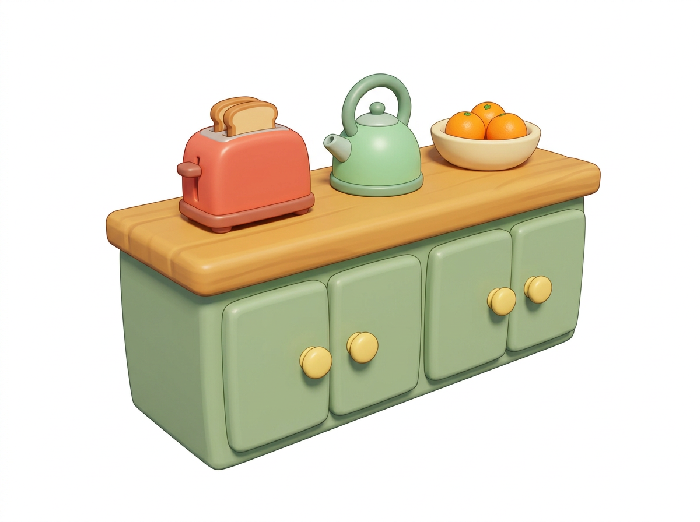
① VARCO 컨셉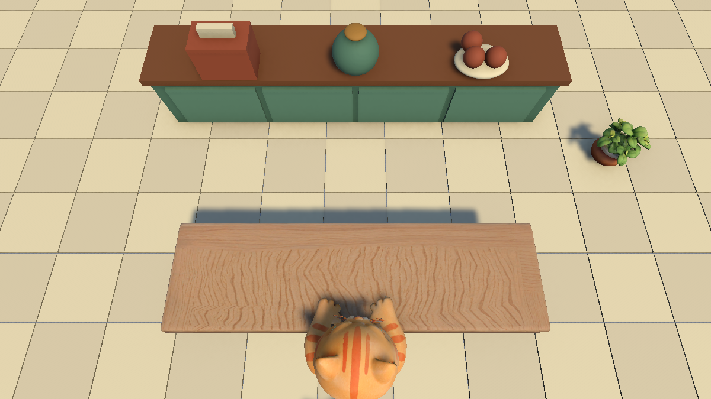
② 배경을 보이려 당긴 구도검증: 도자기 하나를 놓고 오른손 최대 충전, 레벨별로 맞는 최대 거리 측정
계속 깨는 자동 플레이로 측정 → 스테이지 1은 생성(2.5초)이 깨는 속도를 못 따라가 60초 중 27.4초 동안 식탁이 비어 있었음
수정 스테이지별 최소 개수(3 / 5 / 7)보다 적으면 0.35초마다 채움
레벨당 수치 상향
| 강철 앞발 | 12 → 20% |
| 재빠른 앞발 | 8 → 12% |
| 넓은 휘두르기 | 8 → 20% |
| 번갈아 치기 | 6 → 15% |
| 콤보 유지 | 0.25 → 0.4초 |
확인: 짧게 친 앞줄 도자기가 Lv 0에선 남고 Lv 5에선 떨어짐
첫 수정(멈춘 동안 이동 차단) 뒤에도 재현됨
에디터가 뒤에 있으면 프레임이 돌지 않아 AI가 직접 재현할 수 없음 → 진단 스크립트 SlideProbe를 넣고 사용자가 플레이하며 로그 수집
→ 원인과 해결은 다음 쪽
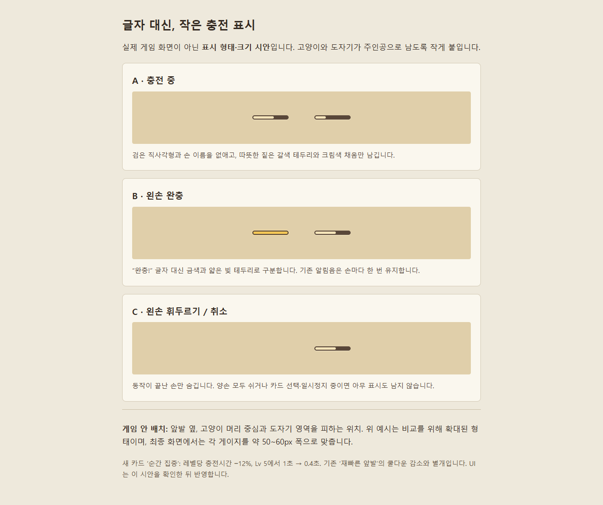
| 단계 | 내용 |
|---|---|
| 증상 | “화면 전체가 왼쪽으로 쭉 넘어갔었어” — 레벨업 카드가 뜨는 동안 화면이 계속 밀림 |
| 1차 가설 | 방향키를 누른 채 카드가 떠서 고양이가 이동 → 멈춘 동안 이동 차단, 누르던 키 무시 → 수정 후에도 재현 |
| 진단 | SlideProbe로 멈춘 동안 시간 배율·고양이·카메라 위치를 매 프레임 기록 |
| 로그 | 고양이 x −0.600, 입력 0으로 그대로 · 카메라만 매 프레임 0.004 m 이동 (−6.18 → −7.01 m) |
| 원인 | 흔들림이 더해진 위치를 다음 프레임 기준으로 다시 읽음. 시간이 멈추면 추적도, 흔들림 감소도 멈춰 같은 흔들림이 계속 쌓임 |
| 조건 | SMASH·PURRFECT(흔들림) 직후 레벨업 카드가 뜰 때만 |
// 흔들림을 뺀 추적 위치. transform에서 다시 읽으면 // 흔들림이 다음 프레임에 쌓인다 float followX; else if (Time.deltaTime > 0f) // 멈춘 동안은 추적하지 않음 followX = Mathf.SmoothDamp(followX, target.position.x, ref velocityX, followSmoothTime); Vector3 position = new Vector3(followX, height, target.position.z - backOffset); // 멈춘 동안에는 흔들지 않는다 (흔들림이 끝나지 않으므로) if (Application.isPlaying && shakeTimeLeft > 0f && Time.deltaTime > 0f) { shakeTimeLeft -= Time.deltaTime; position += (transform.right * noise.x + transform.up * noise.y) * shakeAmplitude * fade; } transform.position = position; // 흔들림은 매 프레임 새로 더함
실제 코드 발췌 (노이즈 계산 생략)
“도자기가 2개씩 겹쳐 나올때 서로 부딪혀서 넘어짐”, “고양이 손위치에 생성되서 겹침”
칸 간격 0.22 m < Collector 지름 0.223 m → 간격 0.25 m, 앞발 0.18 m 안 생성 금지
“아직도 도자기가 혼자 넘어지는 현상이 있네” → 첫 줄 뒤로, 앞발 충돌체 시험
앞발 충돌체: 걷기만 3분에 25개 넘어짐 → 제거. 부드럽게 밀기도 실패 → 삭제
// BreakableVase.Break — 속도를 0으로 만든 뒤 비활성화 body.linearVelocity = Vector3.zero; body.angularVelocity = Vector3.zero; gameObject.SetActive(false); // VaseSpawner.Place — 먼저 켠 다음 초기화 vase.gameObject.SetActive(true); // 비활성 Rigidbody에 준 속도는 반영되지 않는다. // 켠 뒤에 초기화해야 깨질 때의 속도·회전이 남지 않는다 var body = vase.GetComponent<Rigidbody>(); body.position = pos; body.rotation = rot; body.linearVelocity = Vector3.zero; body.angularVelocity = Vector3.zero;
실제 코드 발췌
이동 중에는 Push 준비 자세로 앞발을 몸쪽으로 당겨 도자기와 겹치지 않게 함
| 문제 | 원인 | 해결 |
|---|---|---|
| 앞발이 도자기를 한 번도 못 맞힘 | 판정 중심을 손목에서 0.06 m만 옮겨 손끝까지 닿지 않음 | 판정 중심 0.10 m, 손끝 경로로 Sphere Cast |
| 검증 중 손 본이 움직이지 않음 | Animator Culling Mode가 화면 밖이면 본 갱신을 건너뜀 | AlwaysAnimate로 변경 |
| 멈춘 동안 카메라 값 NaN 위험 | 시간 0일 때 SmoothDamp에 0이 들어감 | 시간이 흐를 때만 추적 |
| 왼쪽 위 HUD 글씨가 잘림 | 게임이 아니라 Game 뷰가 112%로 확대돼 있었음 | Game 뷰 배율 1배, 1920×1080에서 확인 |
| 능력 이름이 영어 · 한글 폰트 없음 | 내장 폰트에 한글이 없음 | 한국어 이름 + Jua 글꼴, TextMesh Pro로 교체 |
| 배경 GLB 모델을 불러오지 못함 | 프로젝트에 glTFast 패키지가 없음 | 패키지를 늘리지 않고 같은 모델을 FBX로 받아 적용 |
| 사운드 테스트 중 NullReferenceException | Domain Reload를 끈 빠른 Play 설정에서 재컴파일 직후 앞발 상태가 초기화되지 않음 | 저장 후 씬을 다시 불러와 검사 → 이벤트별 재생 통과 |
| 배경이 도자기 낙하 공간을 막음 | 배경만 보고 식탁 바로 뒤에 배치 | 파손 공간을 먼저 비우고 구도부터 다시 설계 (12쪽) |
// CatController.cs — 새 Input System으로 양손 버튼을 따로 받는다 leftPawAction = new InputAction("LeftPaw", InputActionType.Button, "<Mouse>/leftButton"); rightPawAction = new InputAction("RightPaw", InputActionType.Button, "<Mouse>/rightButton"); // PawSwipe.cs — 손마다 Ready → Charging → Swiping 상태를 돈다 case Phase.Charging: s.chargeTime += dt; // 누르고 있는 시간만큼 충전 // 0~1 충전량. 최대 1초, '순간 집중' 카드가 배율을 줄인다 s.charge01 = Mathf.Clamp01(s.chargeTime / (tuning.maxChargeTime * ChargeTimeMultiplier)); // 애니메이션은 준비 자세(4프레임)까지만 진행 → 팔을 당긴 채 대기 s.clipTime = Mathf.Min(s.clipTime + dt / ClipDuration, tuning.FrameToNormalized(tuning.windupFrame)); if (!s.held) Release(s); // 버튼을 떼면 휘두르기 break; void Release(PawState s) { // 번갈아 치기: 직전이 반대 손이고, 맞혔고, 짧은 시간 안이면 힘 보너스 bool alternating = lastSwiper != null && lastSwiper != s && lastSwiper.hitBodies.Count > 0 && clock - lastSwiper.releaseTime <= tuning.alternatingWindow; s.alternatingBoost = alternating ? AlternatingBonus : 0f; s.phase = Phase.Swiping; s.swipeId = nextSwipeId++; // 휘두를 때마다 고유 번호 → 연쇄 중복 방지 s.cooldownLeft = Cooldown; // 손별 재사용 대기 (기본 0.6초) SwipeReleased?.Invoke(s.charge01); // 사운드·충전 UI에 알림 }
실제 코드 발췌 · 주석 보강
// BreakableVase.cs — 식탁 위에서 다른 도자기와 부딪혔을 때 void TryTransfer(BreakableVase other) { // 앞발에 맞지 않았거나, 이미 전달했거나, 같은 휘두르기면 전달하지 않음 if (SwipeId == 0 || HasTransferred || other.broken || other.SwipeId == SwipeId) return; float speed = lastVelocity.magnitude; if (speed < tuning.chainMinSpeed) return; // 너무 느리면 연쇄 없음 // 방향: 두 중심을 잇는 방향 70% + 친 쪽 진행 방향 30% Vector3 dir = (toOther * tuning.chainCenterWeight + travel * (1f - tuning.chainCenterWeight)).normalized; // 전달률 60% (도미노 효과로 최대 95%) → 100% → 60% → 36% … other.ReceiveChain(SwipeId, ChainStep + 1, dir * speed * ChainTransferRate); body.linearVelocity = lastVelocity * tuning.chainCarrierKeep; // 친 쪽은 감속 HasTransferred = true; } // ImpactEvaluator.cs — 바닥에 처음 닿는 순간 등급 결정 float speed = t.SpeedScore(impactSpeed); // 충돌 속도 → 0~1 float distance = t.DistanceScore(flightDistance); // 식탁 이탈 지점부터 비거리 → 0~1 float quality = speed * t.speedWeight + distance * (1f - t.speedWeight); // 0.65 : 0.35 float purrfect = kind == VaseKind.Fragile ? t.fragilePurrfectThreshold : t.purrfectThreshold; var grade = quality >= purrfect ? BreakGrade.Purrfect : quality >= t.smashThreshold ? BreakGrade.Smash : BreakGrade.Crack;
검증 앞뒤 3개 일렬, 오른손 최대 충전 → 뒷줄은 연쇄로 2.58 m/s (= 4.3 × 0.6), 세 개 모두 바닥에서 파괴
// ScoreComboManager.cs — 도자기가 깨질 때마다 호출 Combo++; ComboTimeLeft = ComboWindow; // 2초, 10콤보마다 −0.3초(최소 1.1초) + 콤보 유지 카드 float multiplier = ComboMultiplier(Combo); // 1 + (콤보−1)×0.25, 최대 ×3 int points = Mathf.RoundToInt(tuning.gradeScore[g] * (collector ? 2f : 1f) * multiplier); int xp = tuning.gradeXp[g] + (collector ? tuning.collectorBonusXp : 0); // 경험치엔 콤보 배율 없음 // ExperienceAbilityManager.cs — 경험치가 차면 여러 레벨도 한 번에 처리 while (Xp >= XpToNext) { Xp -= XpToNext; Level++; pendingLevelUps++; } // 카드 후보: 최대 레벨은 제외, 슬롯 6칸이 차면 보유 능력만 if (l >= tuning.maxAbilityLevel) continue; if (l == 0 && slotsFull) continue; // GameManager.cs — 180초 타이머, 0이 되면 종료 연출 → 결과 EtaLeft = Mathf.Max(0f, EtaLeft - dt); if (EtaLeft <= 0f) EndGame(); // 시간 정지, 충전 취소, Ending 상태 // GameOverlayView.cs — 온라인 순위로 성공·실패 화면을 나눈다 resultHeading.text = rank <= 10 ? "난 아무것도 안 했는데?" : "들켰다! 도망가자!"; background.texture = rank <= 10 ? seated : fleeing;
검증 경험치 2,000을 한 번에 넣어 30번 연속 선택 → 최대 레벨 초과·중복 카드·슬롯 규칙 위반 0
실제 코드 발췌 · 주석 보강
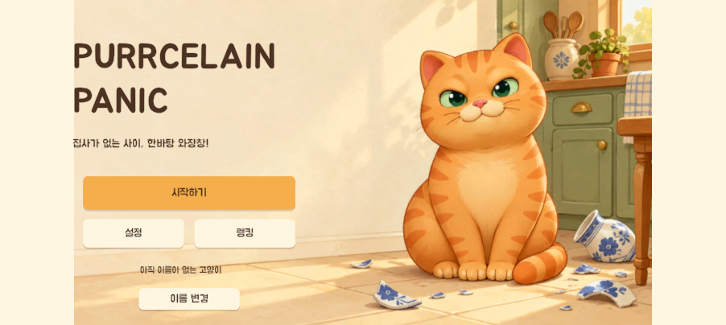
1 타이틀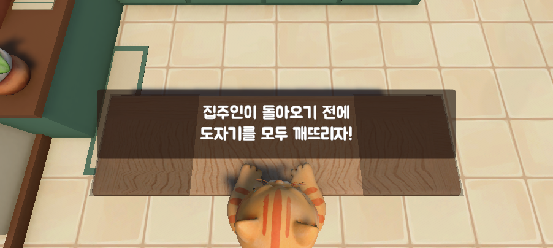
2 인트로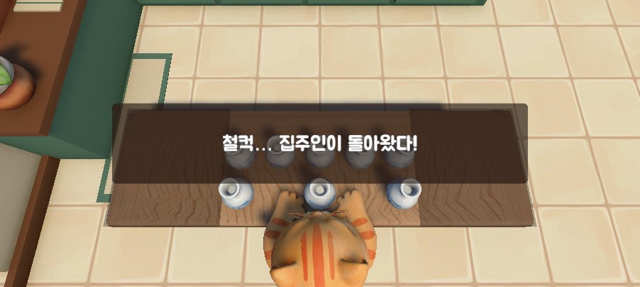
4 엔딩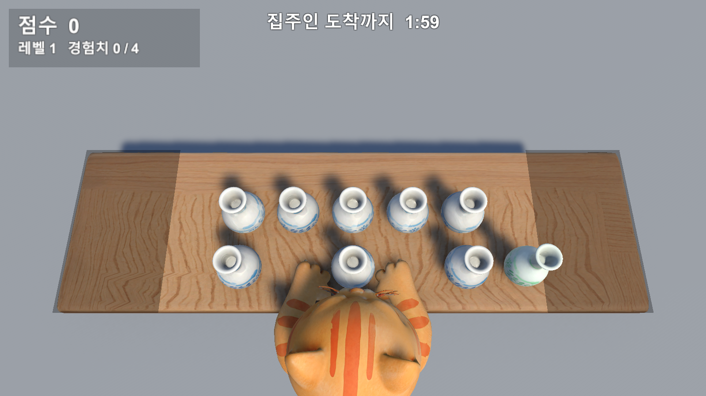
| UI | 연동 데이터 |
|---|---|
| 왼쪽 위 | 점수, 레벨, 경험치 막대 |
| 위 가운데 | 집주인 도착까지 m:ss (마지막 10초 빨갛게 깜빡임) |
| 오른쪽 위 | 콤보 수·배율·남은 시간 막대, 보유 능력 |
| 앞발 옆 | 손별 충전 캡슐, 완충 시 금색 |
| 파손 위치 | 등급·점수 팝업, 콤보·수집품 태그 |
| 화면 중앙 | 스테이지 전환 안내, 일시정지 |
| 레벨업 | 카드 3장 (이름·레벨·효과), 클릭·숫자 선택 |
| 결과 | 최종 점수·최고 콤보·PURRFECT·도달 레벨·온라인 순위 |
글꼴: Jua (SIL OFL 1.1) + TextMesh Pro
| CRACK | SMASH | PURRFECT | |
|---|---|---|---|
| 파편 세기 | 0.3 | 0.6 | 1.0 |
| 먼지 입자 | 4 | 10 | 16 |
| 부스러기 | 0 | 12 | 30 |
| 화면 흔들림 | — | 0.04 m | 0.08 m |
| 점수 팝업 | 톡 | 튀며 불꽃 6 | 불꽃 12 · 고리 |
Fragile은 부스러기 ×1.5 · 콤보가 높을수록 배율 태그가 붉어짐
출처 효과음 Kenney(CC0), BGM OpenGameArt(CC0), 바람 소리는 코드로 합성 · 라이선스 원문을 Assets/Audio에 함께 보관
Windows 실행 파일
타이틀부터 결과·다시 하기까지 한 판 진행
1~2분
타이틀 → 플레이(레벨업 카드·연쇄 파손) → 집주인 귀가 → 결과
GitHub 저장소
Unity 프로젝트 전체, 기획서·작업 기록, 단계별 커밋
빌드 · 영상 · 프로젝트는 저장소와 02_정우영 폴더로 제출